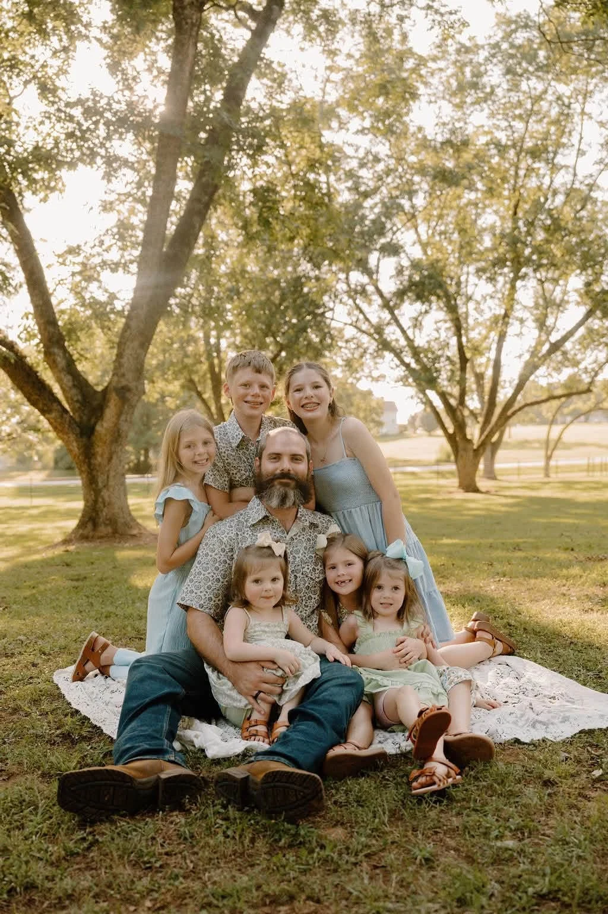

FAMILY OWNED. LOCALLY ROOTED.Good lawns.
Good lawns.
Strong roots.
The Weaver way.
Bermuda hydroseeding for new construction, bare soil, and lawns that need a fresh start. Serving homeowners, builders, and businesses in Pike, Spalding, Lamar, and across Middle Georgia.
$500 hydroseeding minimumCovers up to 2,500 sq ft on one property. Larger projects receive a site-specific estimate.
Insured · Free estimates · Personal service

Hydroseeding✦New construction✦Lawn restoration✦Residential & commercial
A BETTER START FOR YOUR PROPERTYA fresh start.
A fresh start.
A thoughtful process.
From bare ground to a lawn you can enjoy, we start with your property, your goals, and a plan that fits.
A CLOSER LOOKReal ground.
Explore the gallery Real ground.
Real possibilities.



A FAMILY NAME. A LOCAL PROMISE.MEET YOUR NEIGHBORSMore than lawns.
More than lawns.
It's our name
on the work.
I'm Justyn Weaver. After more than a decade in law enforcement, I began a new chapter serving Middle Georgia through our family-owned business.
The commitment is the same: show up, be honest, and treat people and their property with respect.
Get to know WeaverCLOSE TO HOMEProud to serve
Explore our service area
Proud to serve
Middle Georgia.
Explore our service area Local service for homeowners, builders, businesses, and property owners.
LET'S GROW SOMETHING GOODYour next chapter
Request a free estimateYour next chapter
starts from the ground up.
Tell us what you have in mind. We'll help you find a practical place to start.